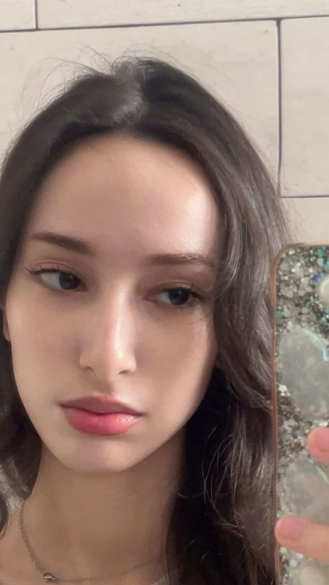

Photo: Studio, AlgeriaAbout the Artist
Mina Arcy is an Algerian Fantasy Artist stydying and painting in her home studio.
Mina creates acrylic paintings that brings the characters from books, shows and from folklore to life. Her paintings feel like a visual representation of the stories that stays on our mind forever.
As a child, Mina was fasciniated by stories and books. Not just reading them but wishing to live inside them.Her same yearning now shows through her work, where each piece becomes a portal into something distant yet familiar.
Each painting invites the viewers to not just look but dive into the portal. To step inside, wander and stay a little longer.